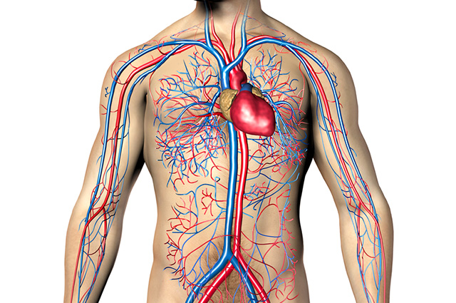
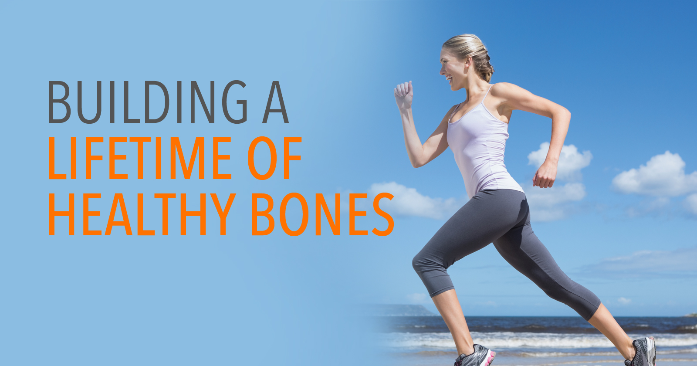
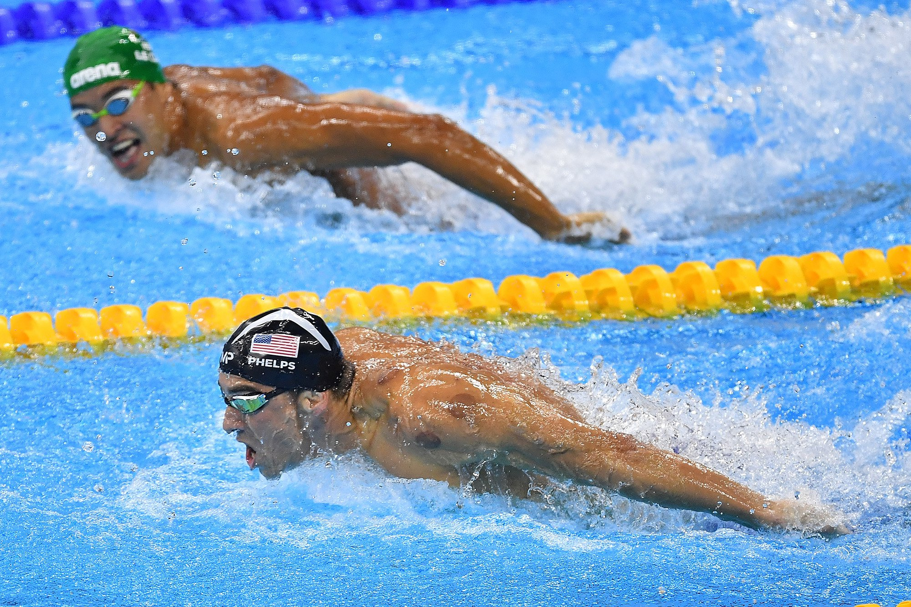

Faz bem ao sistema circulatório, ao sistema respira- tório, entre outros
Vários estudos provaram que existe uma ligação direta entre a prática regular de desporto e a redução do risco de doenças cardíacas e cardiovasculares. Entre muitos benefícios para a saúde associados ao exercício físico estão ainda a redução da pressão arterial, o aumento da capacidade pulmonar (resis- tência física), uma normalidade dos níveis de açúcar e colesterol no sangue e, consequentemente, a diminuição do risco de vir a desenvolver hipertensão e diabetes.

Reduz o risco de inúmeros tipos de cancro
Vários estudos realizados no sentido de comprovar a associação entre exercício físico e condições de saúde vieram demonstrar que a prática diária de pelo menos 30 minutos de desporto reduz o risco de vários tipos de cancro. A destacar estão o cancro da mama e o cancro da próstata.
Fortalece os ossos
Investigações desenvolvidas neste âmbito revelaram que quem pratica desporto regularmente não só consegue manter, como ainda pode aumentar a sua massa óssea, reduzindo o risco de osteoporose. Estudos comprovaram que, tal como ocorre com os músculos, também os ossos se tornam mais fortes quando ocorre uma prática regular de exercício físico.

Ajuda a perder peso, prevenindo a obesidade
O desporto provoca uma queima intensa de calorias, facilitando inevitavelmente a perda ou manutenção do peso.
Aumenta a força corporal e a resistência física
Além de potenciar a saúde do seu corpo, a prática desportiva regular transforma- nos num ser humano mais forte e resistente, não só no que se refere a potência física e muscular, mas também à sua capacidade pulmonar e de endurance. Muitas pessoas acham impossível completar uma maratona, mas com uma prática regular e intensa de desporto, o nosso corpo adapta-se a superar provas de resistência muito duras como as maratonas ou corridas de ciclismo.

Melhora a aparência física e a agilidade
O investimento numa rotina diária de exercícios pode muito bem ser o melhor investimento para quem procura atingir o aspeto físico com que sempre sonhou. De uma forma natural e absolutamente saudável, o desporto vai possibilitar-lhe obter um corpo mais firme, tonificado e ágil.
Aumenta os níveis energéticos
O desporto leva a um aumento significativo da energia de uma pessoa. Uma pessoa que o pratique regularmente terá mais energia para realizar diversas atividades do dia a dia, e não se sentirá cansada tão facilmente.